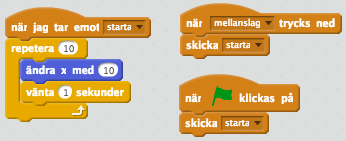
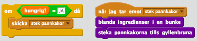
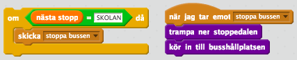

Ett meddelande kan användas för att kommunicera mellan olika delar av ett program eller för att genomföra samma instruktioner vid olika tillfällen
För att två olika delar av ett program, till exempel två spelare, ska kunna samverka behöver de kommunicera. Då kan till exempel en spelare skicka ett meddelande till spelare två som genomföra vissa instruktioner när denne fått meddelandet.
Meddelanden kan också användas för att genomföra samma instruktioner vid olika tidpunkter i programmet. Det är då ett sätt att återanvända kod – i stället för att skriva samma kod flera gånger genomför du instruktionerna varje gång ett meddelande tas emot.

Vardagsexempel
Du är sugen på pannkakor och sätter dig vid köksbordet och skickar ett meddelande till din pappa att han ska steka pannkakor. Han steker en pannkaka och fortsätter tills du är mätt. Nästa dag är du sugen på pannkakor igen och denna gång är det mamma som är hemma. Hon behöver inte fundera på hur hon ska steka pannkakorna, det finns det ett recept eller en algoritm, och du skickar bara ett meddelande till henne om att hon ska steka pannkakor precis på samma sätt som pappa gjorde igår.

Du sitter på bussen och nästa stopp är skolan som du ska av på. Därför behöver du skicka ett meddelande till föraren om att han ska stanna. I det här fallet spelar det ingen roll hur det går till och du bryr dig heller inte om hur föraren stannar bussen. Föraren är enbart en annan del av samma algoritm som du är: att åka till skolan med bussen. Därför skickar du ett meddelande till föraren genom att trycka på Stanna-knappen.
